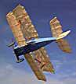
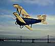

|  | Unfortunately, little is known about the original aircraft. Of course this does provide unprecidented leeway for a scale model, allowing the individual modeler to choose a color scheme that is not dictated. The model is finished with japanese tissue throughout. JCI Blue and Silver on the fuselage, and Micro-X Old Timer for the flying surfaces. Is it scale? Most likely not, but it is pleasing to my eye, and doesn't that count from something? |  |
| The wings have scale spaced ribs with thread to simulate the original wire trailing edges. Finished weight of the model is just over 17 grams including aluminium tubing axles, spoked wheels and the 6 grams of CO2 motor, prop and tank. Fortunately the wings are large! |
| I also had some fun with the shadow! Playing about with the angle of the plane, the sun, and the camera, gave some interesting views of the structure. |
Now if only I can make it through the trimming stages before destroying it!
| 11/18/98: Last weekend the model trimmed out with a lot of right thrust to fly left - left. Top time was 38 seconds, with most around 25 or so. Great fun to watch it flit about. |
Return to Model Index
Copyright 1998, Thayer Syme. All rights reserved